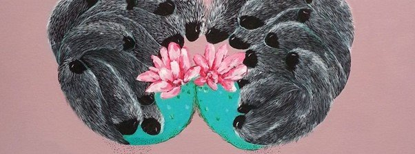
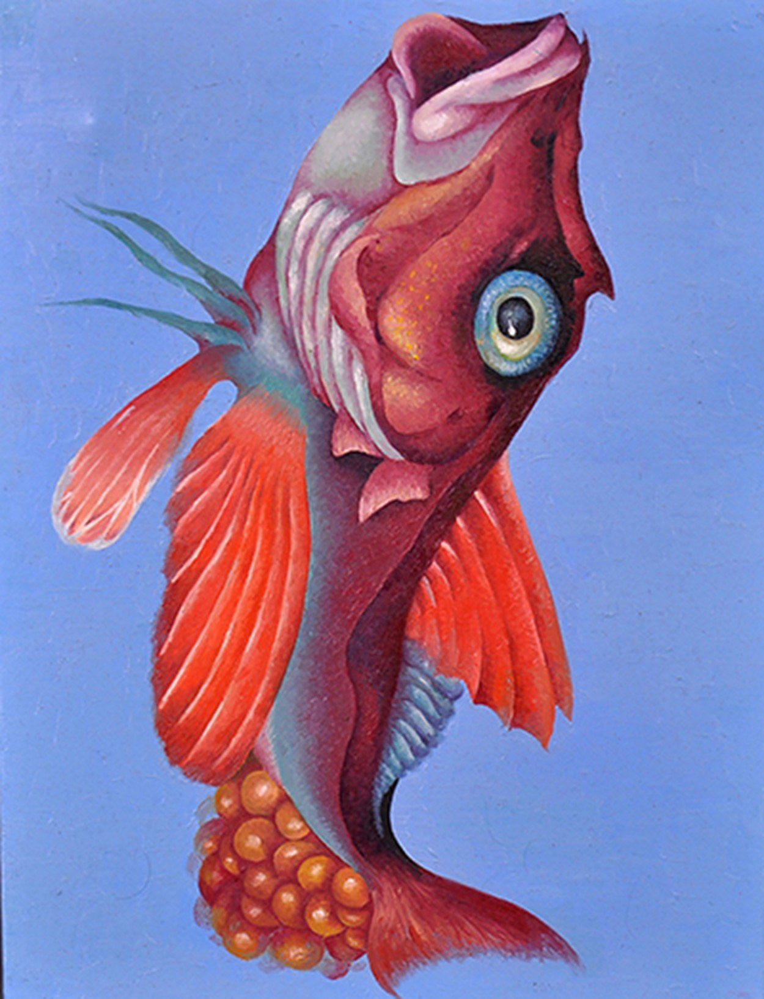
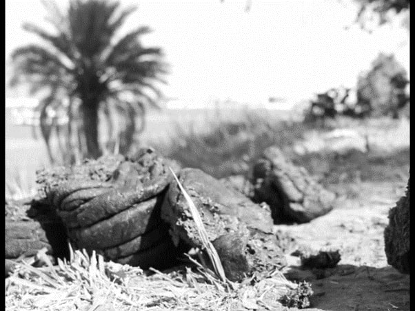
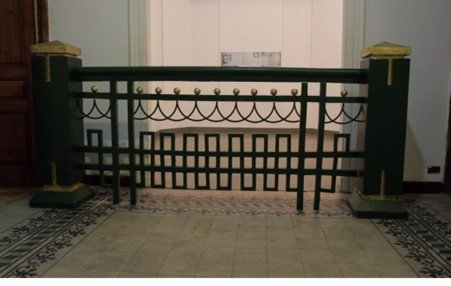
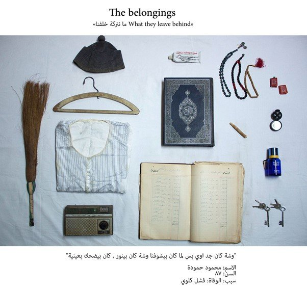

By Ismail Fayed
"Roznama 4" is the fourth art competition held by Medrar for Contemporary Art. With an accompanying exhibition and various prizes awarded, it acts as a platform for artists under 30 working in a variety of media.

Marwa Saad, Hang in There, 2015, using the unusual motif of hedgehogs to depict struggle
The event is arguably the non-state scene's answer to the Culture Ministry's annual Youth Salon, generally considered the framework through which young artists can exhibit. That event has devolved from its initial radical proposal in 1989 to become yet another platform monopolized by state ideologues and their collaborators.
This year's "Roznama" was organized in collaboration with the Contemporary Image Collective (CIC), with two exhibitions taking place at Medrar and CIC. Out of about 300 applicants, 28 were selected by a jury composed of curator and writer Bassam El Baroni, artist Shady El Noshokaty and artist Ahmed Badry.
The show at CIC benefits from that institution's curatorial experience: The artworks are given the space, physically and psychologically, to be explored. At Medrar, however, a more sensitive layout, mixing media and styles rather than placing visually or thematically similar works together, could have made navigation and the overall sense of the works more interesting.
The works in both exhibitions seem polarized around the conflicting tastes of the jury members. Certain works reflect a conceptual or minimal aesthetic, others are more visually layered, and others hover between kitsch and understated. In the absence of a theme, and in the presence of divergent in methods and aesthetics, I felt this incongruity gave rise to unfavorable comparisons. It can be unfair to compare painting and conceptual photography, for example.
Although photography outnumbers all other media, painting is most visually imposing in both shows. Nearly all the works described as painting are series, raising the possibility that the best way painting can currently survive is by morphing into sequences and thus crossing over into sculpture and installation. Nada Barakat's Feral — over 80 miniature painted tiles, fixed at a distance about 5 cm from the wall — looks like a sculpture. Marwa Ben Halim's Spatial Emptiness echoes Noshokaty's own work, particularly the latter's Stammer (2007-2010), due to extensive use of mapping and illustrations. Mohamed Monaisser's Mind Print looks like a barometric pressure map of the human mind. Marwa Saad's series Hang in There (pictured above) uses the unusual motif of a hedgehog (interestingly enough, the long-eared hedgehog is indigenous to Egypt) to depict a struggle.
Marwa Abdel Monem's winning work Successive (an unusual translation of "mutataliyya," which could have worked better as the noun "sequence" rather than an adjective) is a bold statement on the status of painting for a younger generation. It is a cryptic sequence of small oil paintings combining human portraits with images of animals and flowers, reminiscent of 18th-century botanical illustrations. Abdel Monem's bold, almost transparent brushstrokes combined with dark flesh tones and a light blue backdrop give a stark visual effect that highlights the outlandish subject matter. For me, they are easily singled out as the most memorable paintings, despite their inscrutability. The absence of an accompanying text adds to the ambiguity.

Part of Marwa Abdel Monem's Successive, 2015, the winning work combining portraits with botanical elements
The photographic works oscillate between the poetics of derelict, semi-clandestine spaces, meticulous documentation and surreal, fantastical narratives. Two that stand out are Dania Hany's Tracing and Nadia Mounir's Look. Hany's sequence shows marks left by objects (clocks, for example, or picture frames) hung on the wall long enough to leave a trace after they are removed – a beautiful meditation on presence and absence in relation to time. Mounir's Look juxtaposes two small frames, one containing a picture of penguins, the other a picture of a woman standing by a pile of old TV sets. The inconceivability of the images' similarity and the implied correspondence Mounir suggests infuses her work with humor and a delightful visual ambivalence.
The four video works reveal a sense of having to conform to certain precepts of what makes art contemporary: elements of the absurd and the abstract (as a way to characterize our contemporary condition or to nod at late Western post-war artistic influences) and non-narrative composition – though combined with a lack of awareness that non-linear does not necessarily negate coherence altogether.
Mena al-Shazly's peculiar video shows non-actors awkwardly trying to speak in classical Arabic, an attempt perhaps to convey an existentialist angst. Sarah Ibrahim's From Another Movie co-opts Olympic footage to construct a whimsical two-character narrative. Mohamed El Maghraby's hyperbolic Searching for Rabbit Man reminds me of alternative rock bands' music videos.
The exception for me is Peter Nicolas's winning work, For Wanda. Black-and-white footage, captured with extraordinary sensitivity, shows fishermen on their boats and the fish they catch somewhere by the Nile. It is interspersed with a child's puzzled and amused expressions.

Peter Nicolas, For Wanda, 2015, sensitive black-and-white footage of Nile fishermen
Although "Roznama" is a much-needed opportunity for young artists to present their works within the framework of established institutions and networks outside the patronage of the state, many of the artworks themselves reflect the tensions between contemporary art curators and institutions and younger artists whose experience often presents something different, or outside the purview of these individuals and institutions. These tensions are reflected in how contemporary art practices are defined and how artists situate their practices within the art context in Egypt.
For me, contemporary art means an approach to art-making that favors a wide range of styles and possibilities, some of which can be misconstrued as banal, empty or even antithetical to art itself. This diversity of possibilities can easily slip into empty gestures and superficial artworks if not accompanied by open, critical reflection between artists, educators, institutions, critics and viewers. The pressure to produce something contemporary without a critical engagement with the elements that shape what that condition might be can damage artists' processes.
Mohamed Ismail's Green Limitations is a life-size reproduction of the thick metal fence used to divide and designate public spaces, especially in squares or around public buildings. I believe the artist has chosen the contemporary art strategy of decontextualizing an object to reveal the complex relations that constitute our perception of it: Placing this fence in a gallery raises questions about what it divides and how we relate to it.

Mohamed Ismail, Green Limitations, 2015, life-size reproduction of public space barriers

Part of Aya El Sayed's Belongings, forensic-like display of deceased persons' objects
But this particular object needs no decontextualization for us to realize the limitations it imposes on our movement and relationship to public space. Why represent authoritarianism in a gallery, when we are able to experience the real thing only 50 feet away? Why would an artist assume the subjectivity of the state and the way it controls bodies? To me, the only explanation is that the artist thinks the fence is only dealt with as a physical hurdle, and that by isolating it and reproducing it in a different context, he is saving it from falling into the abyss of mundane familiarity. But the idea that its presence as a space divider has been eclipsed by everyday drudgery and thus transformed into a neutral object is farfetched. So Ismail's use of a contemporary strategy results in an empty gesture.
On the other hand, Aya El Sayed's Belongings seems at once contemporary and completely informed by the artist's own experience and interests. It clearly reflects a strategy of contemporary art – that of creating narratives through objects the authenticity of which is unclear. Sayed's photographs are of a forensic-like display of the belongings of people who have passed away with footnotes of her relationships with them, and we don't know if her narratives are fictitious or not.
At a time when young artists are increasingly exposed to global artistic influences and practices, the question of how these reflect on their own contexts and processes is crucial. The assumption that any artwork is universal or global – or that it should be – is in my opinion detrimental to burgeoning artistic practices. The internalization of external influences should not completely replace the subjective experiences of young Egyptian artists. We need to think more about what it means for young artists to be interested in such practices, and identify the continuities and discontinuities between their practices and those that are already established here. We need to offer an open space to allow artists to experiment and develop their work without feeling stuck between the contemporary and a hard place.
"Roznama 4" showed at Medrar and the Contemporary Image Collective till September 30, 2015.